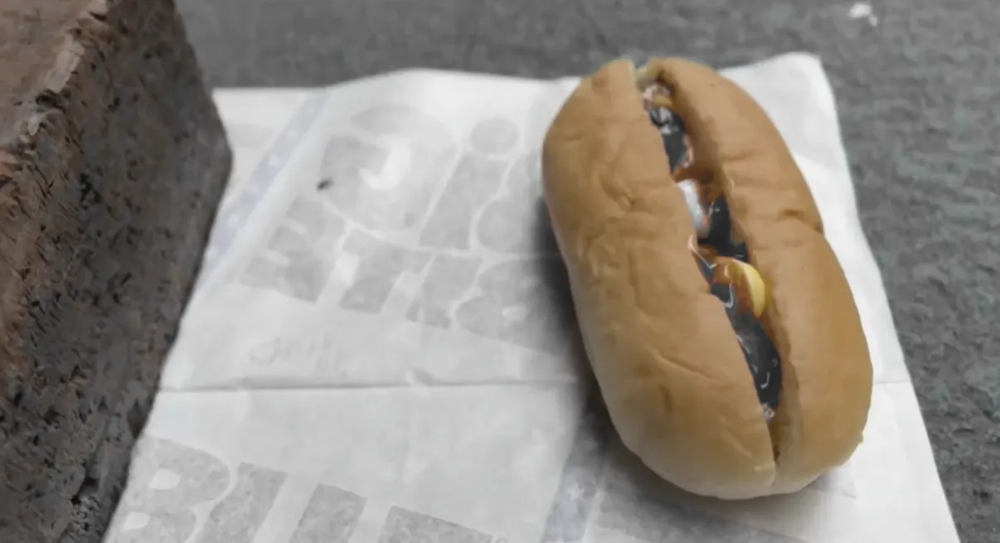
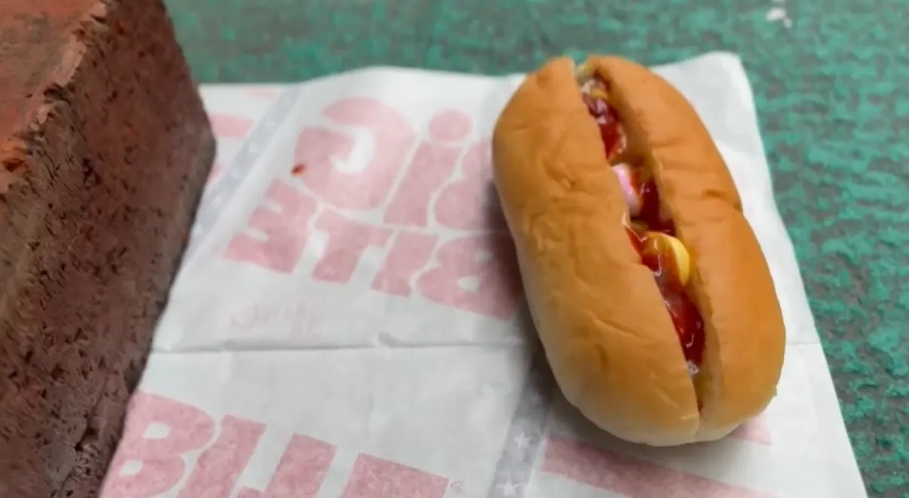
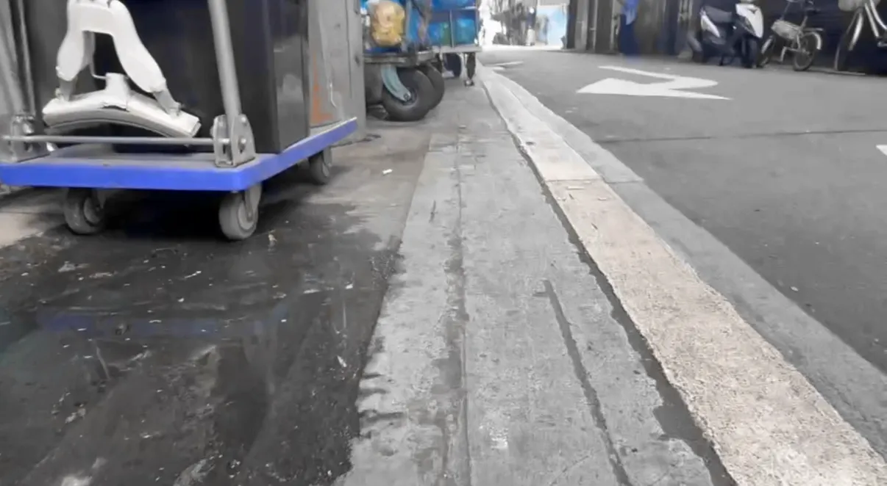
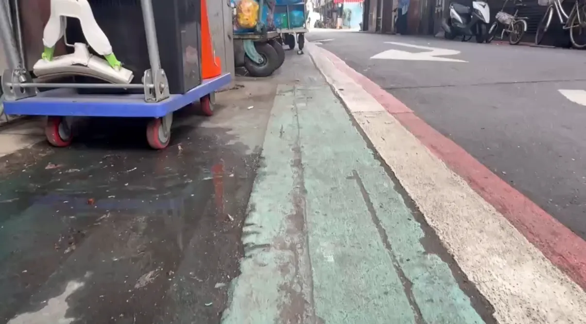
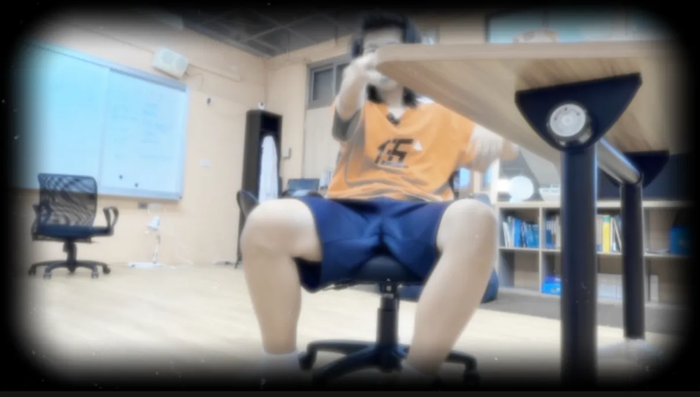
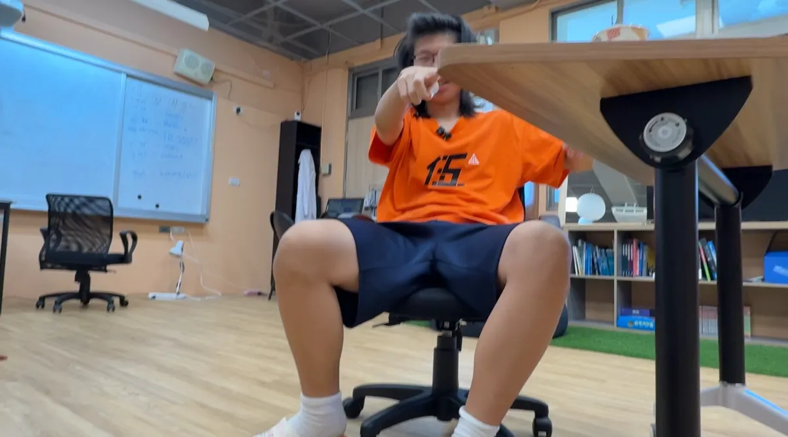
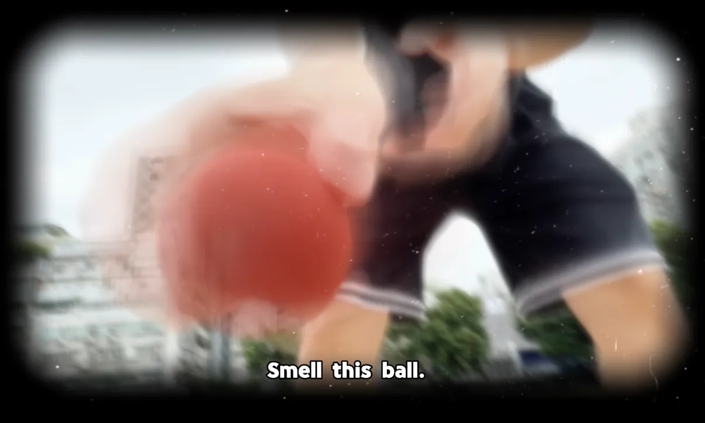

Kailyn
Kailyn
Production Journal
We made up a story about an abandoned dog.
We wanted to show people how dogs can feel when they are abandoned, so people will understand why they
should not do this.
In our story, the dog is abandoned and eats medicine and dies.
The story shows the dog's hard life after being abandoned.
This helps people understand why adopting dogs is important and why people should not abandon them.
In the video, we first wrote a script, chose roles, created storyboards, and made a shot list.
Then we filmed the video.
Our roles and responsibilities were:
Will: filming, Actor
Charlize: filming
Kailyn: Filming, Editing, Story Design
We also made an animation to check the timing of the video.
Sometimes it rained during filming, because we have a good plan, we know how to do next, so we can choose to
film the scene inside the classroom, and we cannot waste the time for the shoot.
When we finish the editing, the teacher gives us some feedback, like, make the story more about abandoning
the dog, and don't use news to be opening.
so we reshoot some what teacher say we need to reshoot, and we make new idea, like dog and owner are
watching the news, to prepare there was a rat poison, dog may eat.
We face some challenges which are noisy outside, we can not shoot for that noisy sound, so we try to fix the
sound, then we borrow the microphone from Dr. Lee.And nest challenge is we groups had a lot of change form
the version 1, we change a lot of things for some props we don’t have, like rope with dog, stroller and
really dog, for these reason, we make so many new ideas, don’t show the really dogs, so we can fix all we
don’t have props.
And some scenes are hard to film, like dog catching the ball, owner slamming the door, dog playing with
owner, so we reshoot and reshoot, at the end we have almost 100 clips to shoot, and we take two weeks over
to shoot for this video,too. For the last challenge, that is “How to make people know the camera is a dog,
we fix by editing, add the walk sound, dog sound and make the dog name listen like the dog.
We also made an animation to check the timing of the video.
Sometimes it rained during filming, because we have a good plan, we know how to do next, so we can choose to
film the scene inside the classroom, and we cannot waste the time for the shoot.
Preparations
Script
Night after night passes.
The sunlight shines on my dirty fur.
The streetlights keep me warm at night.
Everything is quiet.
So lonely.
Did you abandon me?
On the street, when I see dogs with owners,
I can’t even lift my head.
Even though I cannot speak,
you can still see my jealousy.
I once had a home.
When did my life become like this?
I look at my reflection in the water,
and remember the mirror in my old home.
My memory is not very good,
but I still remember my name:
“A-Chai.”
I was good at shaking hands
and spinning in circles.
My owner used to smile and pat my head.
Back then,
I thought happiness would last forever.
But the happy memories slowly fade away,
and I return to reality.
I look at the painful wounds on my paws.
Now, my paws can do nothing.
I cannot even find food.
I was so hungry.
“…Why does this food smell so strong?”
After eating, I slowly collapsed onto the ground.
“I’m so sleepy…”
When I opened my eyes again,
the familiar streets were gone.
Instead, there was only an old cage.
People called this place a shelter.
Every day, people came to look at us.
But most only glanced at me
before turning away.
I wagged my tail as hard as I could.
Even though my body hurt,
I still wanted someone to take me home.
Then one day,
a familiar figure appeared.
“A-Chai !”
I jumped toward him happily.
So…
you did not forget me.
I was finally taken home again
by my original owner.
I thought everything would begin again.
Until that day.
I could not see clearly what it was.
I only smelled something strange.
“A dog ate poison!” someone shouted.
When I opened my eyes again,
the streets were gone.
The doctors tried hard to save me.
The lights were painfully bright.
I could hear hurried footsteps everywhere.
But maybe my life no longer had meaning.
My heartbeat stopped.
Only one cold sound remained:
“Beeeeeeep—”
“A-Chai!”
That familiar voice suddenly brought me back.
The machine showed that I was alive again.
But that was only my imagination.
The last thing I saw
was my owner crying.
If I could choose again,
I would still want to be your dog.
But this time,
please do not let go of me again.
“Taking care of a dog needs more than love.
It also needs responsibility.”
“Please do not abandon a dog
that once trusted you.”
Storyboard
.webp)
.webp)
.webp)
.webp)
.webp)
.webp)
.webp)
.webp)
Animatic
Shot list
Version 1 shot list| Shot | Scene | Role | Angle | Stuff | Sound |
|---|---|---|---|---|---|
| 1 | TV | Will | Straight-on Angle | TV | TV sound |
| 2 | Street | None | High-angle Shot | Sky | Sun |
| 3 | Street | None | High-angle Shot | Sky | Night |
| 4 | Street | Kai | High-angle Shot | Leash | Dog sound, Car |
| 5 | Street | Cha | High-angle Shot | Cart | Dog sound, Car |
| 6 | Street | None | High-angle Shot | Water | Dog sound, Car |
| 7 | Street | None | Low-angle Shot | Water, Dog | Dog sound, Car |
| 8 | Home | None | Straight-on Angle | Dog, Collar, Mirror | owner sound, Happy sound |
| 9 | Home | Will | High-angle Shot | Dog's Toy | owner sound, Happy sound, Dog sound |
| 10 | Home | Will | High-angle Shot | Dog's Toy | owner sound, Happy sound, Dog sound |
| 11 | Street | None | Low-angle Shot | Dog's Hand (Hurt) | Dog sound, Car, Sad sound |
| 12 | Trash Can | None | Low-angle Shot | Trash Can | Dog sound, Car, Sad sound, Trash can sound |
| 13 | Street | None | High-angle Shot | None | Dog sound, Car |
| 14 | Eat Medicine | None | Low-angle Shot | Medicine | Dog sound, Car, Eat sound |
| 15 | Cage | None | High-angle Shot | Cage | Dog sound |
| 16 | Cage | Cha | High-angle Shot | Cage | Dog sound |
| 17 | Cage | Will | High-angle Shot | Cage | Dog happy sound |
| 18 | Home | Will | High-angle Shot | Dog's Toy | owner sound, Happy sound, Dog sound |
| 19 | Home | Will | High-angle Shot | Bed | owner sound, Happy sound, Dog sound |
| 20 | Hospital | Will | High-angle Shot | Light, Hospital | Heart rate sound |
| 21 | Hospital | None | Straight-on Angle | Heart Rate Machine | Heart rate sound |
| Shot | Scene | Role | Angle | Stuff | Sound |
|---|---|---|---|---|---|
| 1 | Home | Will | High-angle Shot | Computer | TV sound, Will sound |
| 2 | Street | None | High-angle Shot | Sky | Sun |
| 3 | Street | None | High-angle Shot | Sky | Rain |
| 4 | Street | None | High-angle Shot | None | Dog sound, Car |
| 5 | Street | None | High-angle Shot | Trash Can | Dog sound, Car |
| 6 | Street | None | High-angle Shot, Low-angle Shot | Mentos, Bread, Sauce | Dog sound, Car |
| 7 | Street | None | Low-angle Shot | Mentos, Bread, Sauce | Dog sound, Car, Dog faint sound |
| 8 | Park | Will | High-angle Shot | Ball | owner sound, Happy sound |
| 9 | Home | Will | High-angle Shot | Dog's Toy | owner sound, Happy sound, Dog sound |
| 10 | Shelter | Will | High-angle Shot | None | owner sound, Happy sound, Dog sound |
| 11 | Home | Will | High-angle Shot | Chair, Table, Computer | Dog sound, Sad sound, owner sound |
| 12 | Outside the Home | Will | High-angle Shot | Cup, Door | Dog sound, Sad sound, owner sound |
Experiments
We using the mentos to pretend the rat poison, and we put the mentos to the bread.
.webp)
And add some sauce inside, make it like cannot eat.
.webp)
.webp)
But at the end, we didn't throw the bread. We ate the bread.
.webp)
.webp)
In the editing we make an idea, that dogs can see blue, yellow and gray, so when it really happens they have this filter,
but if it is just imagined then we can see the other color on the screen.






